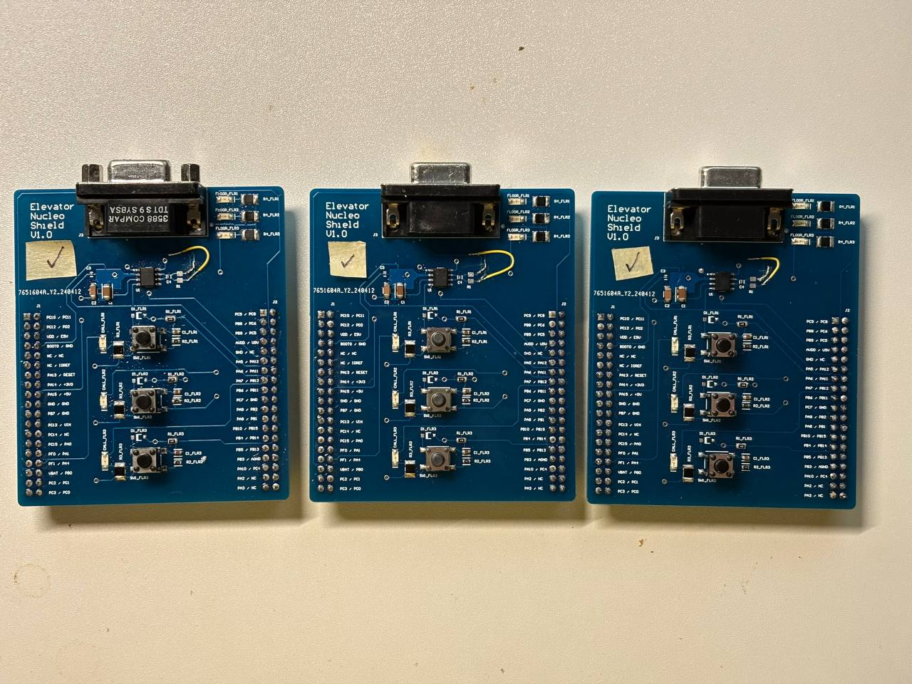
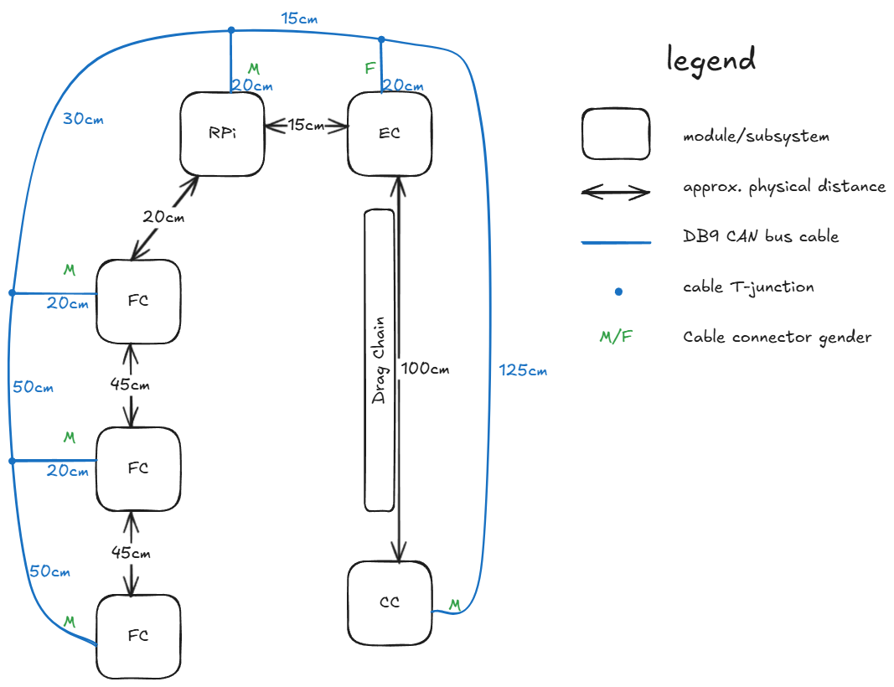

I finished soldering the Nucleo Shields for FC/CC modules. NK
tested each board using an oscilloscope. For more info, see his
logbook.
One of the shields that was missing C3 was tested and
determined to be fully functional.

3 out of 4 Nucleo Shield PCBs fully soldered
CAN Bus Cable Planning
NK and I planned how to solder the CAN bus cable using DB9 cables we got from the Tool Room.

Diagram showing CAN bus cable, segment lengths, and connector genders
An approach on how to split cables was devised. This approach
attempts to balance finished cable quality, electrical
insulation, and labour. The procedure is:
Strip a segment of the insulation on the main bus cable and cut 3 conductors which connect to CANH, CANL, and Gnd lines
Cut a small 20cm-long end of a cable that will branch off from the main bus
Make 3 short wire segments, strip insulation from both ends and the middle
Solder the wires from the short cable to the middle of the 3 wire segments as a T-joint
Cover the T-joint with insulation
Add thick heat-shrink insulation around the branching off cable to act as the strain relief on all 3 T-Joints, add short insulation to both ends of each of 3 wire segments
Solder both ends of the 3 wires to the 2 cut wires from the main bus, such that the short segment joins the broken wires of the main cable
Shrink the heat-shrink insulation
NK took over this task from me to let me develop the EC module during the weekend.